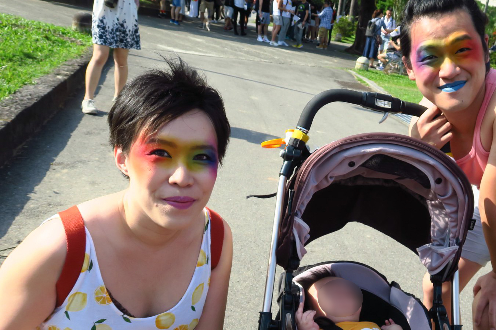
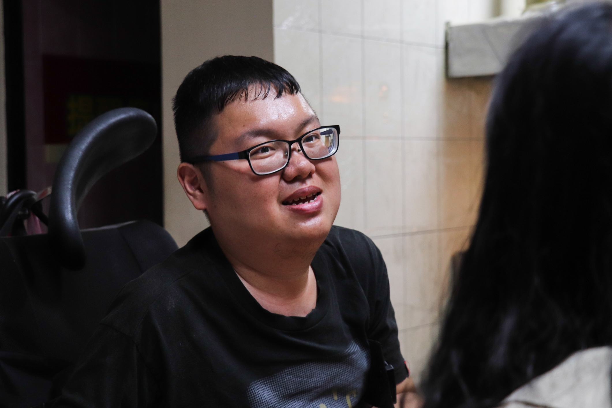
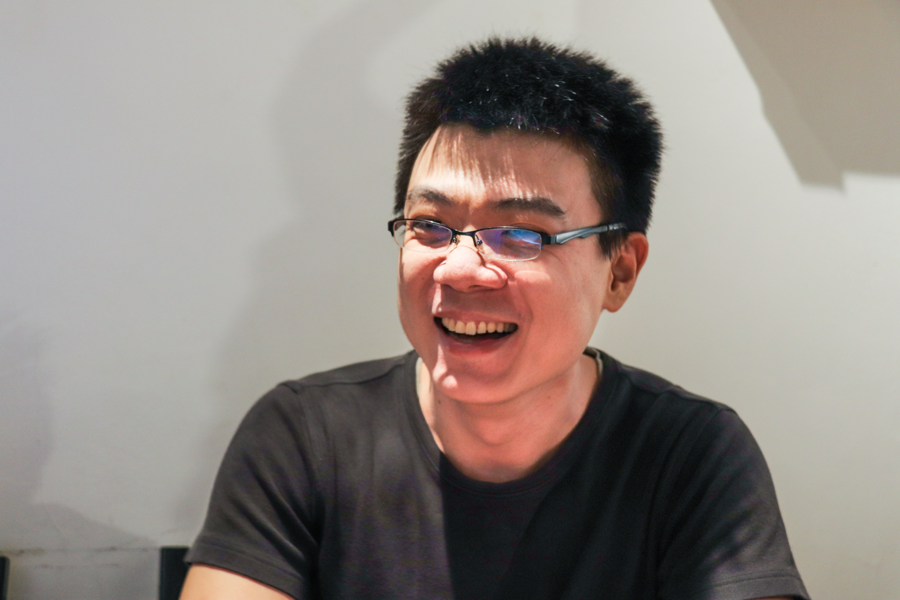

.jpg)
李昕芸
2019/?/?
「這件事情對我來講不是很偉大、慈悲、奉獻的那種。」 ──手天使性義工，阿南。
【專題記者王昱翔、李昕芸、陳韻如、邱于瑄、倪旻勤綜合報導】「手天使」 為台灣唯一的性義工組織，提供重度肢障者與視障者免費手交服務。即便台灣 對性普遍保守，手天使不畏社會抨擊，挺身為身障者性權發聲，讓大眾了解身 障者也有性慾。其中，服務由面談義工深入了解受服務者的狀況及需求，而後 ，再由性義工執行性服務。
「我們是一群性交能力大於社交能力的人」
身穿著黑色低胸連身裙、將露出的大半個胸脯擺在桌上，前性工作者、性義工 奶姬（化名）毫不掩飾自己對性的渴望。在哄鬧的咖啡廳中，她大喇喇地分享 自己的約砲經驗，「我們（性義工）都是可以輕鬆跟陌生人做愛的人，享受高 潮根本不是一件錯事呀！」對奶姬來說，用性交來認識別人，比社交更為容易 。
奶姬訪談時大方談論「性」，她認為每個人都有享受高潮的權利。 圖／陳韻如攝奶姬有輕微的社交障礙，與我們對談的時候他非常緊張，手一直在顫抖著，眼 睛也不敢看我們，和她自信的外表恰恰相反，令人意外。但整個過程，她都非 常坦然地分享她的經驗，以及她的價值觀，我想那是讓她自在的一種方式。已經提供四次手天使服務的阿南（化名）對性非常坦然，她斜靠著沙發椅，平 淡地說著過往的服務體驗。對性積極追求的她，談起性就像在談論天氣一樣稀 鬆平常。「不要以特別的態度去面對性這件事，它就是我們生活中的一部份 。」手天使中的性義工對性都有相去不遠的態度，對性服務並未有過多顧慮， 阿南直言：「如果你本來就守身如玉，應該也不會想來。」
然而，手天使創立以來，不斷受到社會攻擊，甚至遭網友批評是偽道德人士、 賣身團體。奶姬遇過網友私訊臉書帳號，認為她能隨意提供免費性服務，雖然 對此感到不滿，但她仍一一回覆訊息，「誤會解清楚的話，其他什麼都好說 。」阿南則完全不在意他人看法，她更在乎大家是否一同為理想努力，而非外 人眼光。
懷抱目標加入手天使 性義工家人普遍支持
想以性工作為業的組織元老、性義工組長阿空（化名）坦承，一開始加入手天 使，是為促成性交易合法化，「當時想像幫身障者進行性服務，好像有機會做 為性交易正當化的理由。」但投入手天使服務後，阿空漸漸認識身障者，相比 性交易合法化，他更關注身障者權益。
阿南長期關注性別、性權議題，先前在台灣同志諮詢熱線協會服務，也曾就讀 性別相關研究所，因此非常樂意擔任性義工，「這件事是我能做，然後也不會 覺得它困難。」阿南說。她的丈夫與母親都支持她擔任性義工，她未來也不避 諱與孩子分享相關經驗。然因為母親的性觀念保守，並不會主動與他人分享此 事，「她覺得這也是做善事，但好像不是可以讓大家知道的事。」
阿南有個非常可愛的小孩，但我們採訪團隊有個男生Ａ特別怕小孩，偏偏小朋 友特別黏Ａ，一邊追著他一邊流口水，嚇得Ａ抱著筆電繞著桌子跑，避免被小 孩追上，畫面特別好笑。 阿南一家人經常參與性別運動，丈夫也非常支持她擔任性義工。 圖／阿南提供奶姬的家人則非常支持她擔任性義工，「我的家人都很支持我，雖然有點意外 。」奶姬的母親是性觀念開放的家長，在得知奶姬擔任性義工後，非常認同奶 姬的理念，甚至經常央求奶姬鉅細靡遺描述性義工的服務過程，讓奶姬非常害 羞，「她問了很多心得文都看不見的心得。」
手天使成立：解放被身障綑綁的性
對非身障者來說，解決性慾並不困難，但想像如果一個人失去手，或無法控制 自己的手，那他該如何自慰呢？
 小齊以過去面談對象的案例，具體說明身障者性權遇到的困境。 圖／陳韻如攝「我有問過有一些（身障者）申請者，要不要用情趣用品看看。他就回我一句 說，那誰要幫忙洗？」面談義工劉于濟（後簡稱小齊）舉例，對身障者來說， 光是網購適合自己的用品便難以完成。若是郵寄家中，還可能需要家人協助拆 封，面臨尷尬的詢問，更遑論事後清潔。小齊說：「或許輔具也變成是一種階 級，只有某些條件才有辦法使用。」
當小齊提出這個問題的時候，我真的愣住了，對於有手有腳的人而言，從來不 會認為這是一件難事，但對於身障者而言，他們卻一點都沒有辦法。我從來沒 有想過身障者會需要性，或許潛意識裡，我真的認為他因為失去了一些行動能 力，而不需要性這樣的生理需求吧。此外，小齊指出，亦有身障者嘗試尋求性交易，但會難以向家人交代金錢流向 。他提及過去的訪談案例說：「 （身障者）拿五千塊出去，但是回家卻拿不出 五千塊的東西，他就怕很難向家人解釋。」
「其實我們不是找不到管道，而是害怕對方覺得我們是身障者，不好幫我們服 務。」身為視障者的邱同學（化名）表示，以視障者來說，其實可以透過交友 軟體尋找性慾抒發的管道，但因擔心衛生問題，也害怕遭對方拒絕，所以多半 不敢嘗試交友軟體。
2013年，一群關心性權的社會運動者成立手天使，阿空說：「因為發現性權組織不瞭解障礙者，障礙者的性平知識又不足夠。」因此，希望建立性權組織與 身障者團體的溝通管道，讓彼此了解。
阿空強調說：「我們是把自己定位成倡議團體，不是服務團體。」雖然手天使 免費提供手交服務，但人力有限下，並無法負擔全台灣身障者的性需求。阿空 表示，希望以實際服務為倡議手段，讓社會藉由手天使的服務經驗，促使相關 組織投入，進而提出解決方案。
性服務前置作業耗時 過程重視身障者需求
目前手天使的核心成員約有20人，阿南說明，組織會透過分享會公布招募義工 資訊，來參加者才能投遞履歷，並進一步審核，審核通過，便能成為性義工。 不過黃智堅（後簡稱Vincent）表示，近兩年由於組織繁忙，並沒有招募性義工 ，因為陪伴新進義工需投入大量時間，以免義工不熟悉身障者而對彼此造成傷 害。
若身障者欲申請手天使服務，需於官網填寫申請表單，手天使收到後，會分派 面談義工對申請者進行訪談。面談義工都由身障者擔任，小齊解釋：「我們希 望這個（面談）過程是比較對等的，不像社工、醫療模式，有點上對下的關係 。」
訪談內容從申請者的性傾向、家庭、交友狀況，到性經驗皆會詢問。小齊解釋 ，藉由面談，可以了解對方需求，也能夠預估需要安排多少名義工進行事前準 備。然而儘管手天使強調面談內容皆保密，仍常面臨申請者不信任而抗拒訪談 ，小齊說：「你開始跟他說，你有沒有喜歡的人，他就覺得是你為什麼要窺探 隱私？」有不少受服務者因此暫停服務，但小齊仍堅持，必須要了解對方的身 心狀態，才能確保服務順利進行。
「阿空會把（面談義工的）報告濃縮成兩三句跟所有性義工說，問誰有空。」 奶姬說道，目前性義工人數不多，主要依照各自的時間與意願接案，在正式服 務前，性義工不會提前見到申請者，僅透過面談報告認識對方。
服務當天，性義工和受服務者才會首次見面。若發現不喜歡彼此，雙方都有權 終止服務。然小齊表示，身障者很難拒絕別人，因為在成長經驗中，若拒絕他 人協助，容易被誤解為「不知好歹」。「你本來就有權利拒絕別人，今天來的 不是你的菜，你就拒絕他吧。」儘管小齊再三向受服務者強調，至今仍未有受 服務者拒絕性義工。
服務完畢後，行政義工會協助受服務者清洗、整理環境，性義工和受服務者則 需寫服務心得文。手天使期望透過心得文，讓大眾了解身障者在性事面臨的處 境。
完整的接案、性服務到後續追蹤，需花上近一年時間。阿空解釋：「性義工是 喬（協調）得到的，我們之所以服務得慢，其實是卡在面談義工的壓力。」他 說明，面談義工和身障者溝通需花上大量時間，以重度障礙者來說，可能連操 作溝通工具都有困難。也因此，目前手天使的總服務次數僅有二十次左右。
服務過程各異 取決於性義工與身障者互動
每一次出任務，緊張的不只是受服務者，還有背負受服務者期待的性義工。談 到出任務前的心理調適，奶姬從背包裡掏出了一個量杯，她略帶自嘲地笑稱， 自己其實非常不習慣社交活動，需要靠喝酒來舒緩情緒，「我已經精準地測量 出自己必須喝多少，才會比較好相處。」
「會想用什麼態度來面對他，要像性工作者呢、還是要像社工、或是像一個服 務的角色。」阿南回憶起首次出任務的心情，起初她對自身角色感到困惑，但 後來閱讀了身障者性權相關文章，阿南告訴自己不要想太多，「就想成是跟一 般人地去跟他們相處。」
阿空補充，手天使初期許多性義工因為不了解受服務者的身體狀況，所以在進 行服務時，會自我受限，「我們在創立初期，還會討論若受服務者的手腳是沒 知覺的，會不會動一動他就骨折了。」後來，手天使邀請身障者朋友分享他們 對情慾關係及手交的看法，讓性義工能近一步了解如何服務身障者。
 阿空坦言起初性義工並不清楚如何對待身障者，需在經驗中學習。 圖／陳韻如攝每個性義工的服務方式都不太一樣，有些性義工會脫衣服，著重為受服務者進 行全身按摩；有些性義工會引導受服務者觸碰彼此身體，增加刺激；有些性義 工則以聊天為主、手交為輔。阿南笑說她比較沒有服務精神，過程順其自然就 好，「不要有什麼期待，也不要預設什麼。」阿南多會與受服務者先聊天，後 手交，多數受服務者非常健談，會和她分享興趣、工作、感情史。
服務過程中，不少受服務者會向性義工提出額外服務的要求。「服務不像一般 的性工作，只要加錢就可以口交。」奶姬說明，性義工僅保證提供手交服務， 因此受服務者若想有進一步親密互動，就只能嘗試說服性義工。面對受服務者 的要求，奶姬表示：「我會跟他說，我希望你跟我講什麼事情，真的能夠說出 來的人就可以交換到他想要的。」但奶姬也說明，每位性義工有不同的底線和 標準，端看受服務者與性義工當天的互動情形而定。
性義工經服務更認識身障者 遇難題組織成強力後盾
服務不見得總是順利，有時候也會造成性義工的心理不適。奶姬回憶起某次服 務，她答應為對方口交，但卻在過程中被壓頭，且在未被知會的情況下，遭受 服務者射精在嘴巴中。當時奶姬感覺不被尊重，事後尋求了團隊的協助，團隊 告訴奶姬：「你無論做什麼決定，手天使都挺你。」
團隊為了奶姬，與核心成員開會討論解決方式。奶姬說：「它（手天使）給我 一個範圍是，你可以裝沒事，也可以告他性侵。」團隊給予的支持讓奶姬非常 感動，經過自我調適後，她決定原諒該受服務者。為了顧及性義工的心理狀態 ，手天使團隊定期開分享會，讓性義工交流彼此服務的狀況、心情及遇到的問 題。
藉由服務，奶姬深刻地體驗到自身與身障者的不同，她表示，曾經有一位服務 對象是視障者，因為服務時沒有視覺的刺激，受服務者不僅無法體驗性的美好 ，反而因此產生不安感，「原來一個我刻意練過、擅長的動作，是有男人不吃 這一套的。」
阿空笑說：「這個世界上的人大部分都是以手腳健全者的角度來看待世界。」 他解釋，身心健全者很難想像身障者的生活，但透過服務，他更靠近身障者的 社群，甚至為他們遭到的限制打抱不平。例如阿空認為台灣性別教育、性教育 皆應納入身障者觀點，「性教育（課本內）都是好手好腳、耳聰目明的人。」
呼籲更多團體加入 政府應重視身障者性權
「這六年來，我敢說手天使已經讓整個社會或媒體，看到了身障者的性需求 。」Vincent肯定的說，下一個階段就是讓大眾認識並接受身障者的性權。
目前有越來越多人希望能加入手天使。然而，阿空說：「他不一定有想過身障 者的狀態到底是什麼？」他表示，有些人願意加入手天使，但會以施捨的心態 看待手天使服務，或是對無障礙議題討論不感興趣，阿空強調：「我們希望你 是關心身障者的處境，再來一起做。」
不過，手天使提出的訴求也常引起爭議。在去年「障礙者需要性」的遊行中， 手天使向政府陳情並主張，希望性平教育能加入身障者觀點等。然而，奶姬無 奈地說：「政府不負眾望地，在一個多月的時候馬上就打了回票給我們，好像 覺得我們在胡鬧。」
現今有許多學校、媒體邀請手天使分享理念與經驗，也有組織如香港婦女基督 徒協會，希望能進行交流。「我們會開玩笑說手天使的目標就是解散！」面談 義工吳研嘉解釋，手天使只是一個拋磚引玉的角色。Vincent也說明，希望透過 手天使的倡議，使更多身障者團體以及父母願意發聲，讓大眾了解障礙者也有 性需求，並督促政府重視他們的性權，「當政府願意做這件事情的時候，我相 信就是手天使可以退休的時候。」
採訪後記
我沒有太多接觸身障者的經驗，採訪小齊是在一個平日的傍晚，下著毛 毛雨，小齊坐著電動輪椅出來接我們，他的住宅在一樓，輪椅可以直接從路上 開進家裡。家裡不算整齊，小齊的四歲孩子就坐在地上看卡通，看到我們的到 來很驚訝，卻沒有說什麼，外勞則在廚房裡邊聽歌邊炒菜。小齊是肌肉萎縮患 者，行動非常不便，就連取下掛在耳朵上的耳機都需要外勞幫助，讓我當下有 些震驚，而當他談到身障者出門的不便時，更是打破了我的想像。
「我有次在跟受服務者用打字對談的時候，他跟我說，他要出去繞一圈。我說 好，後來我才知道他的繞一圈是指，出房門在客廳繞一圈。」小齊表情難過的 說。對我這樣好手好腳的人而言，身障者的痛苦都是我從來不需要思考、或是 苦惱的事情。雖然說這次專題的焦點是在性義工，但我在身障者這個議題上， 有了更新的認識，也希望之後能做與他們相關的專題。
 李昕芸
李昕芸.jpg)